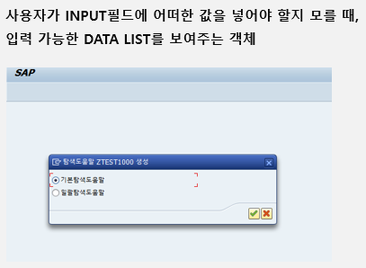

20220913 - SEARCH HELP
SEARCH HELP

사용자가 input field에 어떠한 값을 넣어야할지 모를 때, 입력 가능한 data list를 보여주는 객체
Elementary search help - 기본탐색 도움말
- 일반적으로 사용하는 형태로 하나의 선택 조건들의 조합
collective search help - 일괄탐색도움말
- 여러 형태의 선택 조건들이 합쳐진 조합
- possible entry를 보이기 전에 팝업을 통해 다시 한 번 조건을 부여
Elementary search help


- description
- table name for search help
- dialog type - data 조회가 어떤 형식으로 이루어지는지
- display values immediately - 입력할 수 있는 값의 종류가 바로 나타나는 형태
- 즉, display value immediately - 검색조건 없이 바로 결과 도출
- dialog with value restriction - 제한된 형태의 값 (데이터 개수) 적용
- dialog with value restriction - 검색조건이 무조건 생성
- dialog depends on set of values
- display values immediately + dialog with value restriction
- 데이터 건수가 100건 이하인 경우 display value immediately, 100건 이상일 경우 dialog with value restriction
- 자료가 100건 넘어갈 시 검색 조건이 생성
- display values immediately - 입력할 수 있는 값의 종류가 바로 나타나는 형태
parameter
search help parameter - 필요한 parameter
- IMP - Import parameter (입력 받는 값)
- EMP - export parameter (출력 받는 값)
- LPOS - 출력되는 순서
- SPOS - 입력받는 순서
Search help 사용처 - element


Search help 사용처 - table


Practice
- 학생정보
- 성적테이블
- 재직정보
report에는 조회조건, 결과실행이 들어있어야 함
조회조건
회사코드 - 모든 조회조건의 기본
su01

se01


Domain

T-CODE
ex - exit
se80 - ABAP workbench


se38
program creation


ctrl + F2 → 점검
ctrl + s → save
ctrl + F3 → activate